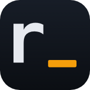

Всё, чтобы вести несколько агентов и не терять нитьEverything to drive several agents and keep the thread
Вы работаете в одном окне, а Radar следит за остальным: статусы, git, уведомления и запросы разрешений.You work in one window while Radar watches the rest: statuses, git, notifications and approval requests.
Статусы в реальном времениReal-time statuses
Работает, ждёт ответа, готов. Для Claude Code и Qwen Code точно, через хуки; для остальных по эвристике экрана.Working, waiting, ready. Exact for Claude Code and Qwen Code via hooks; screen heuristics for the rest.
УведомленияNotifications
Системное уведомление и мягкий звук, когда агент закончил или ждёт вас. macOS и Linux.A system notification and a soft chime when an agent finishes or needs you. macOS and Linux.

Git
Ветка и +/− у каждого агента, diff, commit, push, merge и worktree.Branch and +/− per agent, diff, commit, push, merge and worktrees.
Фоновые сессииBackground sessions
Закрыли окно, агенты работают дальше. Запустили radar и вернулись на тот же экран.Close the window and agents keep going. Run radar and you are back on the same screen.
Разрешения из спискаApprove from the list
Ответ на запрос одной клавишей, всегда с текстом запроса. Режима «разрешить всё» нет.Answer a request with one key, always with the request text. There is no "approve all".
Управление из скриптовScriptable
radar ctl поднимает агентов, отправляет им задачи и ждёт результата из любого скрипта или CI.radar ctl starts agents, sends them tasks and waits for results from any script or CI.
12 цветовых схем12 color schemes
Тёмные и светлые, от Catppuccin до Gruvbox. Меняются на лету.Dark and light, from Catppuccin to Gruvbox. Switch on the fly.
Точно там, где можно, и честно, где нельзяExact where it can be, honest where it can't
Radar не угадывает то, что агент может сказать сам.Radar does not guess what the agent can tell it directly.
Хуки агентаAgent hooks
Claude Code и Qwen Code сообщают о событиях через radar hook по unix-сокету: статус точный, без разбора экрана.Claude Code and Qwen Code report events via radar hook over a unix socket: exact status, no screen scraping.
Эвристика экранаScreen heuristics
Для остальных агентов Radar разбирает терминал (vt100) и находит приглашения, спиннеры и вопросы. Хуки включаются в «Интеграциях».For other agents Radar parses the terminal (vt100) and finds prompts, spinners and questions. Hooks are enabled under Integrations.
Ваш ответYour answer
Запрос разрешения всегда показывается с текстом, ответ уходит агенту как обычное нажатие клавиши. Ничего не подтверждается вслепую.An approval request is always shown with its text and the answer goes to the agent as a normal keypress. Nothing is confirmed blindly.
Один префикс, никаких мышейOne prefix, no mouse needed
Нажмите Ctrl+b и режим навигации включён. Нажмите кнопку с подписью «показать», чтобы увидеть действие в демо выше.Press Ctrl+b to enter navigation mode. Press a key marked "show" to see it in the demo above.
Одна команда. Одна минута.One command. One minute.
macOS (Apple Silicon и Intel) и Linux (x86_64, aarch64). Через скрипт или Homebrew.macOS (Apple Silicon and Intel) and Linux (x86_64, aarch64). Via script or Homebrew.
СкриптScript
Берёт последний релиз под вашу систему и кладёт бинарник в ~/.local/bin.Takes the latest release for your system and puts the binary in ~/.local/bin.
Homebrew
macOS и Linux (Linuxbrew). Имя полностью: короткое brew install radar ставит другое приложение.macOS and Linux (Linuxbrew). Use the full name: plain brew install radar installs a different app.
Из исходниковFrom source
Нужен Rust. Первая сборка около двух минут.Needs Rust. The first build takes about two minutes.
ОбновлениеUpdating
Агенты в фоне продолжают работать.Background agents keep running.
Короткий README, подробные разделыA short README, detailed guides
Всё на русском и английском.Everything in Russian and English.
Откройте один терминал. Запустите всех.Open one terminal. Run them all.
Бесплатно, с открытым кодом, без аккаунта.Free, open source, no account.